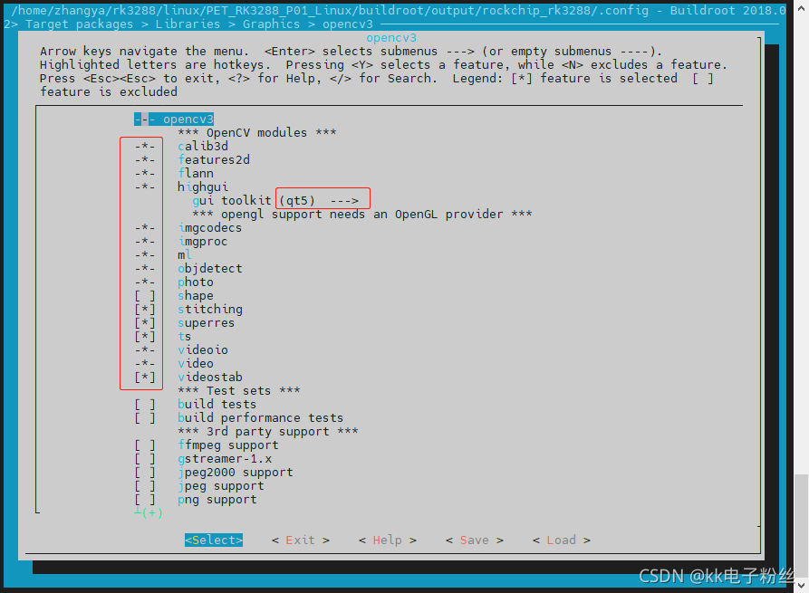
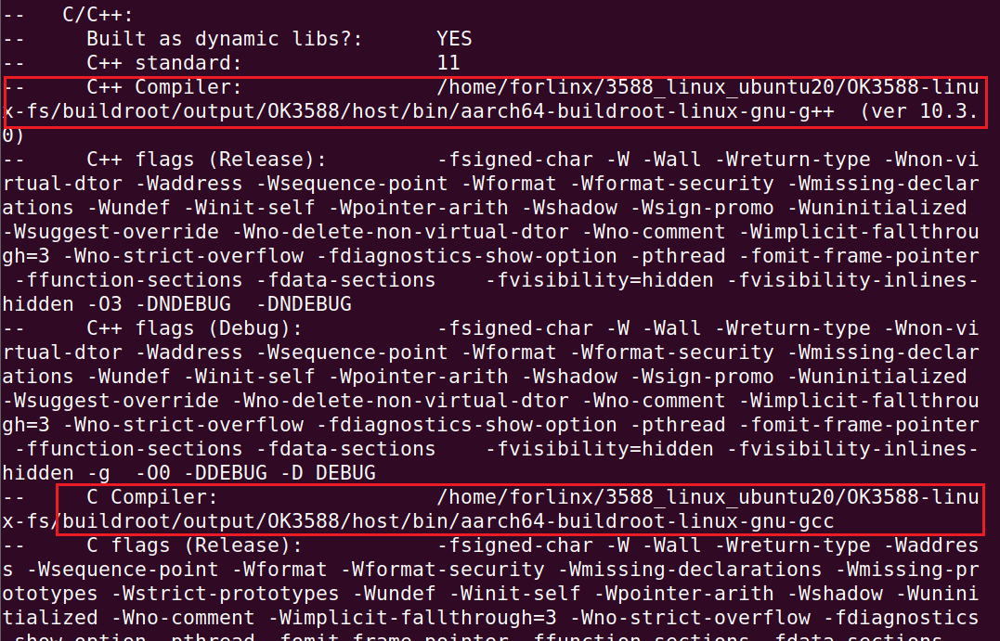
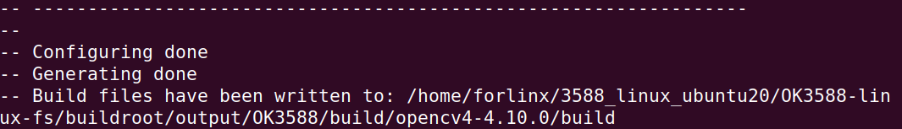

OK3588 5.10.66 Buildroot Installing OpenCV4, Upgrading OpenCV4, and Compiling OpenCV Third-Party Contrib Libraries
Document classification: □ Top secret □ Secret □ Internal information ■ Open
Copyright
The copyright of this manual belongs to Baoding Folinx Embedded Technology Co., Ltd. Without the written permission of our company, no organizations or individuals have the right to copy, distribute, or reproduce any part of this manual in any form, and violators will be held legally responsible.
Forlinx adheres to copyrights of all graphics and texts used in all publications in original or license-free forms.
The drivers and utilities used for the components are subject to the copyrights of the respective manufacturers. The license conditions of the respective manufacturer are to be adhered to. Related license expenses for the operating system and applications should be calculated/declared separately by the related party or its representatives.
Revision History
Date |
Version |
Revision History |
|---|---|---|
03/24/2025 |
V1.0 |
Initial Version |
Installing OpenCV4, Upgrading OpenCV4, and Compiling OpenCV Third-Party Contrib Libraries
This manual applies to the OK 3588 5.10.66 buildroot system to install openCV4, upgrade openCV4, and compile the third-party library contrib of opencv.
Customer application development requires opencv4.10.0 and the third-party library contrib4.5.4.
Source Code Acquisition Source
https://github.com/opencv/opencv_contrib contrib git repository.
Compilation Process
Buildroot system configuration opencv4.5.4 >>> Upgrade to opencv 4.10.0>>>>Compile contrib based on opencv4.10.0.
Compilation Process
3.1 Buildroot System Configuration for OpenCV 4.5.4
Refer to: buildroot+qt+qcamrea+opencv打开摄像头进行拍照录像保存功能_buildroot opencv-CSDN博客
Since the Linux 5.10.66 + Qt 5.15.2 system does not compile Buildroot by default, you first need to compile Buildroot on a virtual machine. Refer to the attached document “OK3588-C-Compiling Buildroot Application Note_V1.0” for detailed instructions.
In the Buildroot system for the Linux 5.10.66 kernel on the 3588 platform, the default configured version of OpenCV is 4.5.4.
Navigate to Target packages → Libraries → Graphics → opencv4 in the Buildroot menuconfig interface. Position the cursor on opencv4, then press the ‘y’ key on the keyboard to select it.
Press the “Enter” key to enter the opencv4 configuration menu. Make selections as shown in the figure below (ensure they match the options highlighted in the red box).

After compilation, the following directories will be generated under:
OK3588-linux-fs/buildroot/output/OK3588/host/aarch64-buildroot-linux-gnu/sysroot/usr/. An directory (containing OpenCV header files)
A lib directory (containing OpenCV library files)
How to Verify Successful Compilation of OpenCV4?
In the include directory, you can find the opencv4 folder; in the lib directory, you can locate all opencv library files starting with libopencv_*, indicating that opencv has been added to the buildroot system.
3.2 Upgrade to Opencv4.10.0
Refer to: OK3588 5.10.66 Buildroot package分析与ffmpeg添加rkmpp插件示例
Modify OK3588-linux-fs/buildroot/package/opencv4/openc4.mk file.
Change the version to 4.10.0 and add OpenCL support.
#Change the version, and then modify the compilation options for different versions
#OPENCV4_VERSION = 4.5.4
OPENCV4_VERSION = 4.10.0
OPENCV4_SITE = $(call github,opencv,opencv,$(OPENCV4_VERSION))
OPENCV4_INSTALL_STAGING = YES
OPENCV4_LICENSE = Apache-2.0
OPENCV4_LICENSE_FILES = LICENSE
OPENCV4_CPE_ID_VENDOR = opencv
OPENCV4_CPE_ID_PRODUCT = opencv
OPENCV4_SUPPORTS_IN_SOURCE_BUILD = NO
# Disabled features (mostly because they are not available in Buildroot), but
# - eigen: OpenCV does not use it, not take any benefit from it.
OPENCV4_CONF_OPTS += \
-DWITH_1394=OFF \
-DWITH_CLP=OFF \
-DWITH_EIGEN=OFF \
-DWITH_GDAL=OFF \
-DWITH_GPHOTO2=OFF \
-DWITH_GSTREAMER_0_10=OFF \
-DWITH_LAPACK=OFF \
-DWITH_MATLAB=OFF \
# -DWITH_OPENCL=OFF
-DWITH_OPENCL=ON \ #Add OpenCL support
-DWITH_OPENCL_SVM=OFF \
-DWITH_OPENEXR=OFF \
-DWITH_OPENNI2=OFF \
-DWITH_OPENNI=OFF \
-DWITH_UNICAP=OFF \
-DWITH_VA=OFF \
-DWITH_VA_INTEL=OFF \
-DWITH_VTK=OFF \
-DWITH_XINE=OFF
After the modifications, execute the Buildroot compilation command. The opencv4.10.0 archive will be automatically downloaded to the directory OK3588-linux-fs/buildroot/dl/opencv4/.
3.2.1 Handling Hash Error During Compilation
Modify Ok3588-linux-fs/buildroot/package/opencv4/openc4.hash file, add the hash value of the compressed package tar. gz opencv4-4.10.0.
Install sha checksum verification tools on the virtual machine.
sudo apt-get install hashalot
The sha verifies the command to get the hash value.
sha256sum opencv4-4.10.0.tar.gz
3.2.2 Handling Hash Error During Compilation Delete
OK3588-linux-fs/buildroot/package/opencv4/the patch file under the directory, and then recompile the buildroot.
3. Add the opencv third-party library contrib
What’s in the contrib?
Link: OpenCV4与OpenCV-Contrib模块介绍_opencvcontrib模块-CSDN博客
For this third-party library, choose to compile manually and not build with buildroot.
Reference documents:
Link: 交叉编译opencv4.7.0及opencv_contrib源码for arm64_opencv4.7 交叉编译-CSDN博客
OK3588-linux-fs/buildroot/output/OK3588/build/opencv4-contrib-4.5.5/README.md
Process
Confirm that opencv4 has been installed first, and there is a folder of opencv4 under the path of OK3588-linux-fs/buildroot/output/OK3588/build/;
Extract the attachment opencv4-contrib-4.5.5 archive to the OK3588-linux-fs/buildroot/output/OK3588/build/directory;
Configure the cmake tool.
sudo apt-get install cmake
Because there is no build root to help us configure the cross-compiler. So you need to configure it yourselves.
Enter 3588_linux_ubuntu20/OK3588-linux-fs/buildroot/output/OK3588/build/opencv4-4.10.0/platforms/linux/, modify aarch64-gnu.toolchain.cmake file. Replace the path of the GNU _ MACHINE with the path + prefix of the cross-compiler that comes with the buildroot system.
set(CMAKE_SYSTEM_PROCESSOR aarch64)
set(GCC_COMPILER_VERSION "" CACHE STRING "GCC Compiler version")
set(GNU_MACHINE "/home/forlinx/3588_linux_ubuntu20/OK3588-linux-fs/buildroot/output/OK3588/host/bin/aarch64-buildroot-linux-gnu" CACHE STRING "GNU compiler triple")
include("${CMAKE_CURRENT_LIST_DIR}/arm.toolchain.cmake")
Go to the 3588 _ Linux _ ubuntu20/OK3588-linux-fs/buildroot/output/OK3588/build/opencv4-4.10.0/directory (the source directory of opencv4) and create a folder named build. Compile the contrib third-party library with the following command.
cmake .. -D CMAKE_BUILD_TYPE=Release -D CMAKE_INSTALL_PREFIX=../add_contrib_install -DCMAKE_TOOLCHAIN_FILE=/home/forlinx/3588_linux_ubuntu20/OK3588-linux-fs/buildroot/output/OK3588/build/opencv4-4.10.0/platforms/linux/aarch64-gnu.toolchain.cmake -DOPENCV_EXTRA_MODULES_PATH=/home/forlinx/3588_linux_ubuntu20/OK3588-linux-fs/buildroot/output/OK3588/build/opencv4-contrib-4.5.5/modules
CMAKE_INSTALL_PREFIX: Represents the storage path of the generated bin and libs.
DCMAKE_TOOLCHAIN_FILE: Represents the path to the cmake cross-compiler
DOPENCV_EXTRA_MODULES_PATH: Represents the path to modules in the contrib source code.
The instructions above are solely for compiling the contrib module. If you also wish to compile OpenCV4, please refer to the instructions provided below.
cmake .. -D CMAKE_BUILD_TYPE=Release -D CMAKE_INSTALL_PREFIX=../add_contrib_install -DWITH_CUDA=OFF -DENABLE_PRECOMPILED_HEADERS=OFF -DCMAKE_TOOLCHAIN_FILE=/home/forlinx/3588_linux_ubuntu20/OK3588-linux-fs/buildroot/output/OK3588/build/opencv4-4.10.0/platforms/linux/aarch64-gnu.toolchain.cmake -DENABLE_PROFILING=OFF -DWITH_OPENCL=OFF -DBUILD_TESTS=OFF -DINSTALL_PYTHON_EXAMPLES=OFF -DBUILD_EXAMPLES=OFF -DWITH_FFMPEG=OFF -DBUILD_opencv_js=OFF -DENABLE_NEON=ON -DOPENCV_EXTRA_MODULES_PATH=/home/forlinx/3588_linux_ubuntu20/OK3588-linux-fs/buildroot/output/OK3588/build/opencv4-contrib-4.5.5/modules
During the build process, if the following printout appears, it indicates that the path configuration for the cross-compiler has become effective.

If the configuration is incorrect, the paths marked in the red box in the image below are /usr/bin/gcc and /usr/bin/g++.
After the cmake build is completed, the following print information will be displayed.

Due to compilation errors in certain modules, the compiler failed to process them properly. As a temporary workaround, please skip these erroneous modules. The commands used for this purpose are as follows:
cmake .. -D CMAKE_INSTALL_PREFIX=../add_contrib_install -DCMAKE_TOOLCHAIN_FILE=/home/forlinx/3588_linux_ubuntu20/OK3588-linux-fs/buildroot/output/OK3588/build/opencv4-4.10.0/platforms/linux/aarch64-gnu.toolchain.cmake -DOPENCV_EXTRA_MODULES_PATH=/home/forlinx/3588_linux_ubuntu20/OK3588-linux-fs/buildroot/output/OK3588/build/opencv4-contrib-4.5.5/modules -DBUILD_opencv_xphoto=OFF -DBUILD_opencv_rgbd=OFF -DBUILD_opencv_ximgproc=OFF -DBUILD_opencv_xfeatures2d=OFF
Execute make -jx,
5.1 Execute nproc to check how many cores the virtual machine has. The return value here is 6, so execute “make -j6”.
After executing “make install”, the generated “bin” and “lib” files will be installed into the “../add_contrib_install” directory specified by the “CMAKE_INSTALL_PREFIX” macro.
Copy the files under the lib and include directories in the add_contrib_install directory to the development board.
Attachments